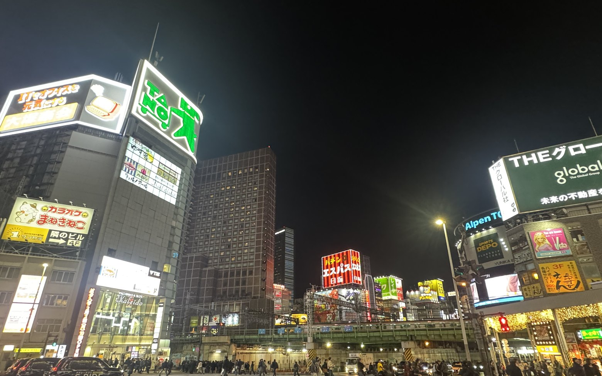
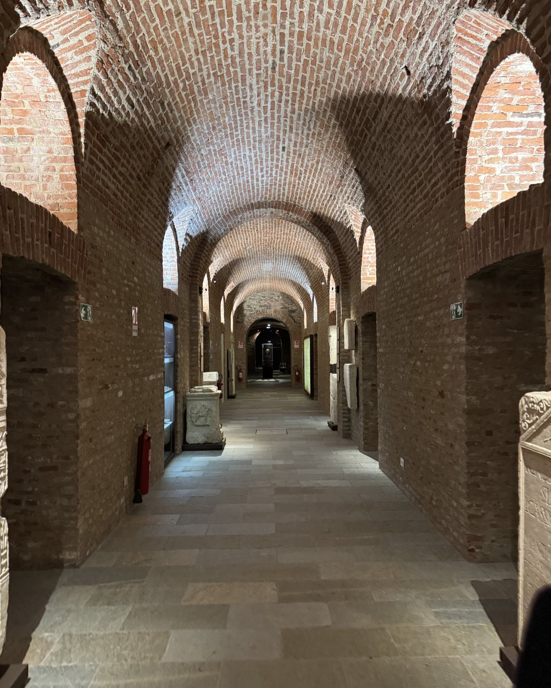

Tour proposal · Akihabara, Tokyo
Three evening walks
One evening, three ways to walk it. Every route starts in Akihabara at 16:00, runs about five hours, and is built on history and culture — not shopping. Read the three, pick the one that fits you, and we confirm the details for that route.



ForGuests who want the story, not the store list
When16:00–21:00, about 5 hours
MeetJR Akihabara Station, Electric Town exit area
FinishDepends on the route — Akihabara, Ueno side, or Jimbocho